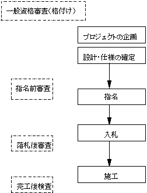

公共調達制度のデザイン
金本良嗣
東京大学経済学部
わが国の公共調達は大きな環境の変化に直面している。第一に、日米構造協議におけるアメリカからの圧力もあって、談合の摘発の強化がなされてきている。それに伴って、永年にわたって談合の温床であった建設業界においてさえ、独占禁止法の順守を業界団体自らが呼びかけるようになってきている。第二に、日本経済の市場解放の一環として、政府調達の分野でも外国企業の参入が不可避になってきている。コンピュータ業界などは既に外国企業が本格的に参入しているし、開放の遅れている建設業においても外国企業の受注がわずかながら出てきている。第三に、わが国の建設業界も、ＣＭ方式やＶＥ制度などの海外で盛んに使われている新しい発注方式を採用するように要請するようになってきている。第四に、ＧＡＴＴの協議において公共調達が取り上げられており、国際的に通用する調達制度を採用しなければならない日も近いであろう。
このように大きな環境の変化が起きているのに、発注者の意識は旧態依然としている。明治以来ほとんど変更のない古色蒼然たる会計法・予決令の体系についてさえも改正の機運がないのは驚くべきことである。最近の中央建設業審議会の建議(1992)においても、発注者サイドの調達システムの改善については大きく踏み込んだ内容にはなっていない。
これは調達システムの改善が公共部門内部の問題であり、外部からの圧力が及びにくいからであろう。官僚組織は変化を好まず、しかも効率化のインセンティブを持たないので、発注官庁から内発的に改善の機運が生じてくることは期待薄である。わが国では官庁の部内情報のディスクロージャーが極めて少ないので、外部にいる人々は調達システムについて建設的な議論ができるだけの情報を得ることができない。もちろん、受注者は業界は発注者とのやり取りを通じて多くの情報を得ているはずであるが、当然のことながら受注企業は自らの利益を第一に考えるのが通常であり、調達システム全体の効率化を目指しているとは言えない。また、発注者と受注者の間の力関係では前者の方が圧倒的に強いために、発注者にとって痛みの伴うような改善を強く働きかけることは困難である。
本稿は、わが国の公共調達制度を改善するためにはどうすればよいのかという問題意識のもとに書かれているが、著者は調達の実務については素人であるので、改善策の本格的な検討結果を提示できるにはまだ程遠い状況である。したがって、調達制度の改善策の検討のために考慮しなければならない問題を整理し、著者なりの検討の方向を提示するに留めざるを得ない。調達の実務を踏まえた本格的な検討のためにはより組織的な研究が必要である。国の財政の最高検査機関であり、中立的な立場に立つ会計検査院が、この分野においても重要な貢献をすることを期待したい。
本稿の構成は以下のとおりである。第２節では、欧米諸国の調達システムと比較してわが国のそれが顕著に異なるのはどの点であるのかを議論する。次に、第３節では公共調達が民間部門の調達と異なるのはどういう側面であるのかを考える。これらの予備的な検討を踏まえて、第４節では、公共部門の調達システムをどう設計すればよいのかについて、もう少しシステマティックに分析する。最後に、第５節では、わが国の公共調達システムについて、現時点で最も重要な政策課題が何であるのかを議論する。本稿では、主に建設・土木の分野を例にとるが、印刷業、軍需産業、コンピュータ産業などの他の分野でも問題は基本的に同じである。
欧米諸国に比較して、わが国の公共調達システムはいくつかの顕著な特徴を持っている。これらのうちで最も重要なのは以下の３点である。
第一に、アメリカでは一般競争入札制が通常であるのに対して、わが国では指名競争入札制がほとんどである。
指名競争入札制によって入札者の数が少なく抑えられていることが談合を生んでいるとの議論がある。しかし、アメリカでの一般競争入札制においても、保証会社の保証を受けなければ入札に参加できないので、入札者の数は実質的に制限されている。したがって、入札者数が少ないことはあまり重要ではなく、わが国の指名競争入札制で重要なのは、指名の基準や理由が不明瞭であり、発注者側の裁量権が大きい点である。この裁量権は、安値での受注を拒否すると次回からの入札に指名しないなどの形で利用され、発注者側の交渉力を強める効果を持っている。
第二に、わが国では予定価格制が厳格に適用されている。予定価格制は発注者で費用を積算してそれ以上の価格では落札させないという制度である。入札価格が予定価格を上回って入札不調の事態になると、入札を何度もやり直したり、改めて他の入札者を指名して再度入札を行ったり、さらには随意契約に移行して特定の業者に予定価格での契約を強制することが行われる。その際に、予定価格での落札を拒否すると次回からの入札に指名しないという脅しが用いられることがある。
これに対して、欧米諸国では入札価格が予定価格を上回ってもそれが一定の範囲内（例えは、１０％以内）にあれば落札させることが多い。また、わが国のように何度も入札をやり直したり特定の事業者に予定価格での入札を強制したりするようなことはないのが通例である。
第三に、わが国の公共工事では談合が蔓延している。わが国での談合の通常の形態は、入札価格を決める価格カルテルではなく、どの業者がどの工事を受注するかを決める工事の分配である。しかし、受注調整によって落札者を決めると入札者間の競争がなくなり、入札者が一社だけであるのと同じことになる。
入札者の間の競争があれば、他の入札者よりも低い価格をつけなければ落札できないので、落札価格が予定価格以下になることが多い。ところが、談合によって入札者間の競争がなくなると、予定価格以下で入札する必要性はなくなる。したがって、もし予定価格がわかれば落札価格が予定価格以下になることはありえない。また、予定価格の秘密が守られていても、予定価格の積算基準は知られているので、予定価格の推定は容易である。
わが国の公共工事の入札では落札価格が予定価格にきわめて近いことがほとんどである。この事実は、談合が蔓延しており、入札者間の競争が機能していないことを物語っている。このような状態にあるにもかかわらず、わが国では談合の摘発は稀である。欧米諸国においても談合がないわけではないが、独占禁止法による談合の取り締まりは厳しく行われており、特にアメリカでは数多くの摘発例がある。
最近の日米構造協議を契機としてわが国でも独占禁止法による談合の取り締まりが厳しくなってきている。それを反映して談合が減少してきているが、建設工事の半分程度は未だに談合の対象になっていると言われている。また、最近の印刷業の談合摘発にみられるように、建設工事以外でも談合が蔓延している。
以上の三つの特徴は、わが国の公共調達では談合が阻止できない（あるいは、阻止しようとしない）ことを前提として、談合の弊害が最も少なくなるような制度を用いていると解釈できる。
第一に、予定価格制を厳密に運用することは、談合の弊害を抑える効果を持っている。すでに触れたように、談合が成功すれば落札価格は「予定価格」に等しく（あるいは、極めて近く）なる。したがって、わが国の公共調達では「予定価格制」が厳密に運用されていて、予定価格の積算に多大の労力と注意が払われているのは、談合の横行を前提にすれば当然のことである。例えば、会計検査院による検査のうちで予定価格の積算に関するものがかなりの比重を占めているのはこの点を反映している。会計検査院の白川健氏による以下の解説はこの間の事情を物語っている。
『さきに述べたとおり、競争契約制度によって工事費の節減が期待できない状況下では、建設産業の生産性向上を発注機関の積算に反映させることによって事業費の節減を図るしか途がないと考えられるからである。しかし、残念なことに、われわれが問題を提起するのは大半の業者が新工法を採用するとか大型機械を導入している場合に限られていることである。もっと早い段階で工事費の積算に反映させることができないものだろうか』（白川健「検査のこころ（８）」『会計検査資料』１９８５年１月号）
第二に、指名競争入札制は予定価格での落札を強制するために用いることができる。予定価格を設定しても、入札価格が高すぎて入札不調になったときには設計変更をして新たに入札をやり直すことになる。したがって、業者が結託して入札不調を繰り返し、予定価格の釣り上げをはかる可能性がでてくる。このような場合には、予定価格での落札を拒否すると、それ以降の入札に指名しないという脅しを用いて予定価格での受注を強制することができる。
McMillan (1990, 1991) は、わが国の公共工事の談合によって１６％から３３％も工事費が増加しているというシミュレーション結果を出している。しかし、このシミュレーションは談合の弊害がかなりの程度予定価格制と指名競争制で抑えられていることを無視している。実際には、談合による受注者側の有利性が予定価格制と指名競争制による発注者サイドの交渉力の強化によって抑えられており、ある種の均衡状態にあると考えられる。そうであれば、現在のところ一応は大過なく機能しているわが国の調達システムを変える必要があるのであろうか？以下では、現在のシステムの問題点を見てみたい。
日本に進出してきている海外の建設業者が一様に主張するのは、日本の建設コストが国際的に見て非常に高いことである。（土地部分を含まない）建物の建築コストはアメリカのほぼ倍にもなっていると言われている。もちろん、わが国では地震対策の必要性や工事スペースの制約からある程度のコスト高になるのは避けられないと思われるが、それらを考慮しても改善の余地はあるものと思われる。談合体質による競争の欠如が建設コストの増加を生んでいる可能性は大きいであろう。
また、わが国の建設業者は５０万社も存在し、非効率な零細中小業者が多い。談合体質が強く競争制限が行われている産業では、新規参入の制限がない場合には企業数が非常に多くなることは産業組織論の常識である。競争制限行為によって利潤率が高くなれば、新しく参入しようとする企業が多いことは当然である。また、既存企業で非効率な経営をしているものも談合によって生き延びることになる。暴力団に関係している企業を排除するために指名制度が必要であるという意見が出されることが多いが、そのような企業が出てくるのは競争が制限されているからである。競争が行われていれば、暴力団に関係しているような企業は経営能力の欠如から自然に淘汰されていくことになる。
前にも見たように、わが国で一般的な指名競争入札制度の大きな特徴は、発注者側が絶対的な裁量権を持っていることである。指名を受けられなかった業者がそのことに対して異議を申し立てる場は存在しないし、なぜ指名しなかったかを説明する必要もない。このような絶対的な裁量権は、良心的な発注者が運用すれば、技術力や経営能力の高い企業を指名することによって、良質で安価な調達を可能にすることになる。ところが、そうでない発注者が運用すると、天下り先の確保などの官僚の利権のために乱用されてしまう。また、往々にして取り沙汰される政治家の介入も、業者から政治献金を受けた政治家が指名業者の選択に介入するという形で可能になる。
後者の点に関連して、わが国で多用されているＪＶ（ジョイント・ベンチャー）制度は大きな弊害をもたらしている。多くのＪＶでは、全国的に営業している大手から地方の中小業者まで規模の異なる企業を数十社から数百社まで集めたジョイント・ベンチャーを組むことを発注者サイドが指定している。ジョイント・ベンチャーの本来の目的は、大規模工事におけるリスクの分散、各社の得意技術のプール、中小業者の技術力の向上などであるが、なかにはジョイント・ベンチャーには加わったが実際の工事は他の業者に下請けに出してその中間マージンだけを吸収する業者が存在している。
このようなジョイント・ベンチャー制度は、政治家が自分と関係の深い地元業者に公共工事を回して超過利潤を得させるための手段として乱用される傾向がある。また、極めて多数の業者を集めたジョイント・ベンチャーを組むためには、業者同士が集まって相談しなければならないので、談合行為を調達者側が強制しているのと同様な効果を持っている。
わが国では、国レベルの調達制度は会計法に規定されており、その運用の詳細は予決令（予算決算及び会計令）に定められている。県や市町村の調達制度は国の制度にならって地方自治法や地方財政法に規定されている。会計法の入札・契約制度に関する規定は、明治２２年の会計法制定以来、明治３３年に指名競争が認められたことを除いてほとんど変更がなされていない。その規定の多くは古色蒼然としたものであり、欧米諸国には類をみないようなものがいくつか存在する。
第一に、一般競争入札が原則であり、それが不利な場合にかぎって指名競争か随意契約によることができるとされており、これら以外の契約方式は認められていない。また、一般競争入札、指名競争入札においての落札者の決定は価格のみによって行われ、技術力や広い意味での品質などを加えた総合評価は行わないのが原則である。（スーパー・コンピュータの調達の場合のように、例外的にこのような総合評価を行うことも不可能ではないが、その際には大蔵大臣との個別協議が必要である。）欧米諸国においては品質や技術力の評価を加えることが認められており、日本のような硬直的な制度をとっている国は存在しない。わが国では品質評価を明示的に行うことができないので、不良工事や疎漏工事の防止のための手段として指名権に大きく頼らざるを得ない状況になっている。
また、欧米諸国ではＶＥ制度が公共調達でも採用されており、落札者が費用削減の提案をした場合に削減分の一部を落札者に与えて提案のインセンティブを付与することが行われている。わが国の会計法はこのようなシステムを想定しておらず、ＶＥ制度が会計法上許されるのかどうかが明確でない。
第二に、工事の途中で倒産したりして完成が不可能になったときのために、工事完成保証人を立てるか保険に加入するかが求められる。わが国では保険が用いられることは少なく、工事完成保証人を用いるのが原則である。工事完成保証人は、もし受注者が工事を完成できなかった際には、調達者側の追加的支払なしで代わりに工事を完成させることを約束するものである。工事完成保証人は同クラスの同業者がなることになっていて、入札で同時に指名された業者がなることが多い。工事完成保証人制度は談合の維持に大きな役割を果たしている。談合破りをした業者にたいしては、次回から工事保証人を引き受けないという罰則を加えることができるので、談合組織の維持を容易にする効果を持っているからである。欧米では完成保証人制度を採用している国は皆無であるが、談合の排除をまじめに考えればこのような制度を採用しないのは当然であろう。
工事完成保証人制度の廃止については発注者サイドの抵抗が大きい。その理由として、保険の場合にはかなりの額の掛け金が必要なのに対して、同業者が交互に工事完成保証人になれば対価を支払う必要がないことがあげられている。予定価格の積算の際にも、保険をかけた際の保険料の額は入れられていない。もし完成保証人制度を廃止すれば保険料を積算に上乗せしなければならず、工事費が膨らんで納税者の負担が増えるという議論がなされる。しかし、よく考えてみるとこの議論は成立しない。同業者が保証をする場合でも保証コストがかかっていないわけではないからである。工事完成保証人を依頼する際に金銭の支払いがなされることが多いことからもわかるように、保証をするサイドはリスクを背負うことになるので、そのことのコストはどこかに発生せざるをえない。現状では、このコストは一般管理費の部分に入っているものと解釈できる。工事完成保証人制度を廃止するとその部分が別建てに計上されるようになるだけで、実質的な工事コストの増加があるわけではない。
第三に、入札前に発注者が予定価格を積算することになっていて、この予定価格以上での落札は認められない。どうしても入札価格が予定価格に達しない場合には、設計変更をして入札をやり直すしかない。欧米諸国ではこのように厳格な予定価格制は採用されていない。
現行の調達システムの建前は、官庁内部の技術者が建設工事の企画と設計を行い、その設計をもとに指名競争入札を行って、最低価格の落札者が設計通りの工事を行うというものである。しかし、官庁内部の技術者の技術力は民間技術者と比較して低下してきており、必ずしも建前通りには機能していないことが多い。もちろん、設計は設計事務所に委託することが多いが、その設計事務所の管理を十分にできるだけの能力とキャパシティーが存在するかどうかが問題である。設計の完成度が低いために施工中の設計変更が多くなり、そのことが工事コストを高くすることになっている。
欧米で一般的になってきているＣＭ方式はこのようなケースに有効な方式である。後程より詳細に解説するが、ＣＭ方式では、工事の企画段階からコンストラクション・マネジャー（ＣＭＲ）と呼ばれる専門家が発注者の代理人として設計、コスト管理、工程管理などの部分を運営していく。ＣＭＲを使うことによって、発注者サイドは設計や施工に関する技術的な問題に頭を悩ませることが少なくなるので、基本計画の策定や住民との折衝などの政治的な調整に専念できるようになる。
わが国ではかなりの数の技術者が官庁内部に存在する関係で、ＣＭ方式の導入にたいする抵抗が強く、公共調達での導入例は存在しない。
これは財政システム全体にかかわる問題であるが、わが国ほど単年度予算が厳格に行われている国はない。例えば、ドイツでは連邦政府から地方政府への補助金についても単年度予算にとらわれない配分が行われる。大規模プロジェクトの多くは完成までに数年かかることが多い。このような複数年度にわたるプロジェクトについては、一度開始されると税収が少なくても支出を削られたり止められたりすることがない。大規模プロジェクトについてはdeclaration of intentionでプロジェクトの完成までの各年の補助金額が示され，これが法的拘束力を持つ。もし連邦政府が約束を守らないときには地方政府が裁判所に訴えることができる．税収が少ないときにも、既存プロジェクトへの配分は削られず、新しいプロジェクトが削られることになる。
単年度予算を厳格に守ることは様々な形で事業費を高騰させている。予算が確定するまでは設計も確定しないので、入札が可能になるまでには、４月に新年度がスタートしてから数ヶ月かかる。したがって、実質的に工事が可能な期間は１２ヶ月ではなく８、９ヶ月ということになる。地方政府が国からの補助を得て行う事業については、国の予算が決まった後に各個別プロジェクトへの配分が決定されるので、さらに２ヶ月程度遅くなってしまう。積雪の多い地域では実質的に工事が可能な期間は４ヶ月程度ということも多い。このような場合には効率的な工程管理が困難であり、事業費が高くなってしまうことは当然であろう。
事業期間が複数年度にまたがるプロジェクトについては、さらに大きな問題がある。第一に、年度毎に工事を分割しなければならないことから、工程管理の効率性が失われてしまう。建設工事のコスト削減の大きな部分は各種の工事の日程をうまく調整することによって、全体の工期を短縮することにある。単年度発注はこのようなコスト管理を困難にしてしまう。
第二に、各年度に工事を分割すれば、工事契約の入札も各年度に別々に行わなければならない。そうすると、例えば１２階建のビルの建築について、５回まで組み上がったところで、次の年度になるようなことがある。このような場合に、次の年度に新しい契約を入札して別の業者が仕事を引き継ぐことになると、様々な不都合が生じる。したがって、現実には今まで工事を行ってきた業者が落札するようにせざるを得ず、業者同士が談合することが（暗黙の内に）求められるということになる。ＪＶのケースでも見たようにわが国では談合がほとんど不可避であるような調達方式が往々にして存在するが、これもその例である。談合を容認する調達システムから競争原理を活用するシステムに移行すると、このような調達方式を続けることは不可能になる。
民間企業の調達システムに関しては、下請け制度、ジャスト・イン・タイム制、カンバン・システムなどが世界的に脚光を浴び、日本の製造業の競争力の一つの大きな要因であるというのが定説になってきている。これらの日本型調達システムの経済合理性については既に様々なところで論じられているので、ここでは議論しない。ただし、以下の２点について注意が必要である。
第一に、どの国においても公共調達システムは民間調達システムとは異なっており、わが国でも例外ではない。わが国の建設工事で一般的な指名競争入札制を民間で採用する例は皆無であると言ってよいし、民間工事で採用されるようになってきているＣＭ方式は公共部門では採用されていない。
第二に、公共調達システムが民間調達システムと異なっているのには様々な理由があり、民間システムをそのまま公共システムに導入することには多くの困難が伴う。この節では、公共調達システムと民間調達システムの差をもたらす要因が何であるのかを考える。
公共部門の調達が民間部門の調達と決定的に違うのは、公共部門の調達担当者に効率化のインセンティブを与えることが困難であることである。民間企業では、より安価に調達すればその分だけ利益が増えるので、費用最小化のインセンティブが存在する。価格だけでなく品質が重要な場合でも、調達物品の品質が落ちるとそれを使った自分の製品の品質が低下して被害を被るので、品質維持のインセンティブが存在する。また、品質と価格がトレード・オフの関係にあるときにどのような選択をするのかについても、最も自社の利益に貢献するような選択をすることになる。もちろん、民間企業も多くの従業員から構成されており、調達者個人に適切なインセンティブを与えるのは容易でない。しかしながら、民間企業には従業員に適切なインセンティブを与えるインセンティブも存在しているわけで、実際にもボーナスや昇給の査定などで従業員の努力に報いている。
これに対して、公共部門では安価に調達しても節約分が調達者の利益になるわけではない。もともと公共部門に任されている分野は利潤を追求する民間企業にはそぐわない分野であるので、民間企業のようなインセンティブ・システムは存在しない。予算が十分あるときには調達コストを低くするインセンティブは存在しない。適切な品質の維持についても、旧国鉄の調達に見られたように過剰に高い品質を追求することがある。あるいは逆に、文部省の定めている大学の研究室の広さの基準などに見られるように、硬直的な基準によって品質が低すぎるようなケースもある。また、一部のコンピュータ・システムの調達に見られるように、ユーザーの使い勝手を良くするためのソフトウェア開発が不十分で利用者サイドに過大な負担をかけているようなことがある。
調達担当者に効率化のインセンティブが存在しないときの調達システムの設計はそうでない場合とは非常に異なる。後程議論するように、どの国でも公共調達ではなんらかの競争入札を行うことが普通であるのに対して、民間企業がそうするのはまれであるのはこの点によるところが大きい。
公共部門では賄賂の収受などの調達担当者の不正行為も大きな問題になる。民間企業でも調達担当者が納入業者からキックバックを受け取るといった事件は存在するが、それをなくすようにする内部管理のシステムを作るインセンティブが企業内に存在している。ところが、公共部門では放置しておけばそのようなシステムができないことは、発展途上国の一部での賄賂の横行をみれば明らかであろう。
わが国で特に重要なのは、調達者が個人的に企業と癒着することではなく、組織全体が癒着することである。天下りや関連財団法人への出資などの形で賄賂に類似した利益供与が行われており、それが効率的な調達を妨げたり、行政の中立性が失われる原因になっている。わが国の調達システムでは調達者個人の不正行為が少なくなっているが、この種の組織ぐるみの癒着は防止されていない点に注意が必要である。
公共部門の調達のもう一つの問題は、公共部門は政治的なコントロールのもとにある点である。もちろん、公共部門が政治的にコントロールされていることは民主主義の基本であるが、調達という経済的行為に政治的なコントロールが入ることは様々な問題を引き起こすことになる。
政治資金を供給したり選挙の際の票の取りまとめをする企業のために政治家が動くことは多い。わが国の政治資金のほぼ半分程度が建設業から供給されているという推定があるほど、建設業と政治の結び付きは大きい。したがって、放置しておけば、企業が政治家を動かして、受注を有利にしたり、予定価格の積算を低くさせないようにしたりする可能性は大きい。その典型例は、技術力のある無しにかかわらず多数の企業のジョイント・ベンチャーを組ませて、自分に関係のある企業に受注機会を与えようとすることである。
調達者サイドのモラル・ハザードや政治的な歪みが存在する場合の有力な対応策の一つは調達者の裁量権を制約することである。既に触れたように、どの国においても公共調達では公開競争入札が原則になっているのはこの理由によるところが大きい。民間企業が公開競争入札を採用することは少ない。その理由には以下のようなものが考えられる。
第一に、納入企業間の競争を行わせるには公開の場での競争入札を採用する必要は全くなく、各企業から個別に見積もりを提出させればよい。公開入札を行うと、どの企業が入札に参加しているかを納入業者が知ることになるので、納入企業の間での談合を招く危険性が大きい。個別に見積もりを出させて、どの企業と交渉しているかを秘密にしておいたほうが談合の防止になる。
第二に、個別に交渉した方が機動的な対応ができるので、入札の準備などに要する時間や費用が少なくて済む。公開入札を行うと、入札者に対して十分な情報を与えるために設計や仕様を確定しなければならず、調達者サイドの費用が高くなるからである。
第三に、品質が問題になる場合には、価格だけの競争を行わせると品質の維持ができなくなる。したがって、品質と価格の間のトレード・オフを考える必要が存在するばあいには、価格だけの競争入札は望ましくない。
価格だけによる競争入札は必ずしも最も効率的であるとはいえないが、調達者の裁量権がほとんど最小化されているという大きなメリットをもっている。競争入札で最低価格の入札者が落札するようにしておけば、調達者に効率化のインセンティブがなくても費用が最小化されることになる。また、競争入札を行えばある特定企業に受注を約束することが不可能になるので、調達者が納入企業から賄賂を取るような不正行為も防ぐことができる。これは政治家の介入についても同じであり、競争入札で真の競争が行われていれば、政治家が特定の業者に落札させるように細工をすることは不可能である。
このように競争入札制は公共調達にとっては理想的な条件を持っているといえるが、ただ一つ致命的な欠点は品質に対する対応である。建設工事の落札価格が低くなっても、その分、不良工事や欠陥工事が増えれば国民全体にとってのコストは増大する。価格だけの競争入札で品質を維持するためには、入札前に品質の仕様を明確に定めて、しかも工事完成後や物品納入後の検査を厳密に行う必要がある。
品質の問題が重要であり、しかも調達者サイドのモラル・ハザードが存在する場合にどのような入札制度が可能かに関しては、Laffont and Tirole (1991)が分析している。彼らが考えているのは、例えば、議会−調達官庁−企業の３者の間の関係において、調達官庁が入札企業と結託する可能性を考慮に入れると議会はどのような入札制度をデザインすればよいかという問題である。この場合に重要なのは品質情報がどのような性格を持っているかということである。
第一の極端としては、調達官庁の持っている品質情報は客観化が困難であり、議会は知ることが不可能な場合がある。このケースには、調達官庁が品質情報を使うことを許すと、調達官庁と企業が結託することを防ぐことができない。したがって、品質の問題が重要であっても価格だけによる競争入札を使うことになる。
この逆の極端は、品質情報が客観的であり、しかも何等かの形で議会がそれを手に入れることができる場合である。この場合には、調達官庁が品質を正しく評価しているのかをチェックすることができるので、調達官庁に品質情報を使うことを許しても差し支えない。
これらの中間のケースとしては、Laffont and Tirole が Hard Information と呼んでいる場合がある。このケースでは、もし調達官庁が品質情報を提示すればそれを議会はきちんと理解できるが、調達官庁が提出しなければその情報を独自に獲得することはできない。このような情報の隠匿可能性を考えると分析は複雑になり、最適な入札方式も簡単な形をしていない。
Laffont and Tirole は、これらの分析を踏まえて以下の点を指摘している。第一に、調達官庁と入札企業の結託の可能性がある場合には、調達者にかなりの制約を課す必要がある。例えば、調達者の不正行為の抑制を図るために、入札プロジェクトの公表や入札結果の公開を義務付けることがあげられる。第二に、調達官庁が品質情報を用いる際には、それを正当化する証拠の提出を義務付ける必要がある。アメリカ国防省の調達システムでは、最低価格以外の入札者に落札させるためには独立の評価委員会の評価を提示することが必要であるとされているのは、この点を反映している。
Laffont and Tirole は調達官庁の不正行為を防ぐ手段として入札方式のデザインだけを考えているが、彼らも指摘しているように入札方式以外の方策も考えられる。第一に、落札できなかった企業からの異議申し立てを積極的に利用することが考えられる。アメリカでは落札結果に不満のある企業は第３者機関である会計検査院に訴えることができて、そこで審判が下されるようになっている。このような異議申し立ては、調達官庁のコントロールのためには有効な手段であろう。第二に、調達担当者が企業の担当者と直接に接触することを禁じたりして、結託を困難にすることがあげられる。また、不正行為が発覚した場合の罰則を厳しくしたり、おとり捜査や盗聴などの手段を用いて不正行為の検挙の確率を高くしていくことも有効な手段となるであろう。
調達担当者に制約を課すよりは、不正行為自体の摘発に集中するほうが望ましいと強く主張しているのが Kelman(1990)である。彼は、アメリカにおけるコンピュータ・システムの公共調達のケース・スタディーを行い、調達者に対して制約が課されていることが大きな非効率性を生んでいることを指摘している。アメリカの調達システムでは最低価格の入札者以外に落札させることが可能であるが、そのためには品質が優れていることの客観的な証拠を提出する必要がある。
ここで重要なのは、自分のところでの過去の経験は客観的な証拠として認められないことである。例えば、今までの納入者が、コンピュータ・システムがダウンした際に担当者をすぐには派遣しなかったり、能力の劣ったシステム・エンジニアを派遣したりといったことをしばしば行っていて、そのことをきちんと記録に留めていても、この種の証拠は調達官庁の主観的なものとみなされて、次の調達の際には無視されてしまう。納入者のサポートが悪いことの客観的な証拠となるのは、他の多数の調達官庁や民間企業の調達者の調査結果をもとにサポートの悪さが統計的に有意である断定できる場合にかぎられる。このようなシステムのもとでは、サービスを良くしても次の受注にはつながらないので、サポートが悪くなるのは当然である。
Kelman はこのようなケース・スタディー結果をもとに、アメリカの調達システムの改善のためには調達者の裁量権を拡大すべきであると論じている。裁量権の拡大に基づく不正行為の増加に関しては、おとり捜査や盗聴などの現代的な捜査手法の適用によって対処することが十分可能であると主張している。
ここまではわが国の公共調達制度の現状と問題点を整理し、さらに公共調達が民間調達と異なった特殊性を持つことを議論してきた。次に、公共調達制度をどうデザインしていけばよいのかをもう少しシステマティックに考えてみよう。
まず、公共調達システムが達成すべき目標を設定しなければならない。公共調達は国民の利益のために国民の税金を使うものであるので、目標の最初に来るのは「コスト」と「品質」であろう。いかにして優れた品質を低いコストで確保するかというのが調達システムの設計の出発点である。
しかし、ここで注意しなければならないのは、調達コストを非常に広い意味に解釈しなければならないことである。この調達コストには調達者サイドで負担しなければならない事務負担も含まれるし、天下りに伴う人件費や接待費、政治活動費などで落札価格に入っていないものも含まれる。また、調達コストを近視眼的に考えてはならない。現時点の調達コストを低くするために無理矢理に買いたたくと、今年はよくても将来の品質が維持できなくなったり、技術進歩を阻害したりするかもしれないからである。
コストと品質についてもう一つ重要なのは、これらの間にトレード・オフの関係があることが多く、品質を上げるためにはコストが高くなるのが通常であることである。どの程度の品質をどの程度のコストで確保するのがよいのかというのは、非常に微妙な意思決定であり、その意思決定が適切になされるようなシステムが望ましい。
民間調達においてはコストと品質以外の要因を考える必要はほとんどないと言ってよいが、公共調達においてはそれら以外にも「公正さ」や「不正行為の排除」などが大きな要因となる。民間の調達では自分のお金をどう使おうと自分の勝手であるという側面があるが、公共調達では国民の税金を使っているので、ある特定の人々に利益を与えるような使い方は望ましくない。また、調達者の不正行為は民間企業であれば基本的には企業内部の管理の問題にすぎないが、公共部門では国民全体の問題になる。
公正さに関してよく議論になるのは、「機会の公平」と「結果の公平」との違いである。特に、わが国の談合擁護派の人々が言うのは、機会の公平は欧米の思想であり、わが国の（古き良き）伝統は結果の公平であり、談合は結果の公平の維持のために不可欠であるというものである。
しかし、わが国の伝統が結果の公平であるというのには大きな疑問がある。わが国の経済発展を支えてきたのはし烈な競争であって、談合体質の強い業界は石油化学業界、建設業界などをみても分かるように国際競争力が弱い。また、わが国ほど公共部門でくじ引きを用いる国は例がない。住宅都市整備公団や住宅供給公社の宅地分譲や公共賃貸住宅の応募において、倍率が数十倍から数百倍に及ぶことがあり、その際にくじ引きが行われる。これは典型的な機会の平等であり、くじ引きに当たったものと外れたものの間には大きな結果の不平等がある。このようなシステムは欧米諸国では大きな抵抗を受けるであろう。
経済活動における機会の公平は単なる公平なくじ引きを意味しているものではない。５０％の確率で資産がゼロになり５０％の確率で１０億円の資産を得るのよりは、確実に５億円の資産を得るほうがよいと考えるのは、欧米人であろうと日本人であろうと同じである。経済活動において機会の公平を重視するのはそのようなことを考えているからではなく、経済の効率性を維持するためには競争原理を活用することが不可欠であるからである。結果として必ず均等な受注が保証されていれば、経営を効率化して費用を削減するインセンティブは失われてしまう。したがって、調達システムのような経済活動における公正さは、機会の公平を確保するのが主眼である。結果の平等は、同等の能力を持つ人々が同等の努力をしたときに結果としてあまり不公平にならないようにするという意味に限定しなければならない。
次に、コスト、品質、公正などの基本的な政策目標を達成するためにはどのような戦略が可能であるかを考えてみよう。
まず、最も重要なのは競争の維持、談合の排除である。談合が蔓延している状況ではコストを低下させる唯一の手段は予定価格の設定である。予定価格を適切に設定すれば談合による独占利潤の発生を抑えることが短期的には可能である。しかし、競争原理を用いなければ、長期的な業界の効率化を達成することはできない。技術開発や経営努力を重ねる企業が伸びていって、そうでない企業が淘汰されていくことが、長期的な効率化のためには不可欠である。ところが、談合によって受注の配分を行っている業界では、このような新陳代謝のメカニズムが働かず、非効率企業が温存されてしまう。予定価格はその時点の平均的な費用を前提に計算されるので、非効率な企業が温存されていれば調達コストは高くなることになる。
第二に、企業間の価格競争が激しくなれば品質の維持についても格段の配慮をしなければならなくなる。品質の確保のためには２つのタイプの戦略がある。第一は、品質に問題のある企業を排除するという「スクリーニング」である。品質に関しては、技術や経営能力に加えて、不誠実な行動なども入る。また、特に建設工事に関しては、工事途中の倒産によって工期が遅れたり、工事が不可能になったりすることも防止しなければならない。わが国ではスクリーニングを会社単位で行う傾向があるが、同じ会社でもどの技術者が統括している部門かで技術力に大きな差が存在することがある。アメリカにおけるように、どの技術者が担当になるかまで含めたスクリーニングが必要になる場合もあるであろう。
品質確保の第二の方策はそのための「インセンティブ」を与えることである。これには品質を評価して高品質の場合にはボーナスを与えることや、品質が一定以下の場合にはペナルティーを与えることが考えられる。わが国の公共調達制度では事後的にボーナスを与えることが許されていないことがこの種の方策の妨げになっている。
品質のためのインセンティブを与えるためのもう一つの方策は、良好なパフォーマンスを示した業者を将来の発注で優遇したり、パフォーマンスの悪い業者を将来の発注から排除することである。過去の実績に依存した発注は民間調達では当然のことであるが、アメリカの例にも見られるように公共調達のケースでは調達の公正さの観点から許されていないことがある。品質の確保のためには、過去のパフォーマンスを考慮に入れることと調達の公正さとを何等かの形で両立させることが望ましい。
品質確保のためにどのような戦略をとるにせよ、価格だけで落札者を決めるという方式から、品質と価格の両方を考慮する方式を採用することが必要になる。この点ではわが国の制度は世界に類をみないほど硬直的であり、何等かの改善が必要である。
第三に、発注者の不正行為や政治家の介入を防止するための方策には幾つかのタイプがある。第一のタイプは、発注者が守るべきルールを定めて、その履行を強制することである。アメリカの制度ではこの種のルールが詳細に定められている。例えば、調達担当者は納入企業の交渉担当者以外と接触することが禁止されていたり、調達担当者とは独立の契約担当官が契約内容の妥当性をチェックしたり、直接の調達担当者以外から構成される独立の委員会が品質の評価を行うことになっていたりする。この種のルールが守られているかどうかは省内の検査組織や会計検査院が検査するし、違法行為については司法省などの捜査が行われる。
不正行為の防止のもう一つの手段は、情報公開（ディスクロージャー）である。明らかに問題があるような行為はルールで規制することができるが、グレイ・ゾーンに入るようなことや単なる怠慢はルールで規制することは困難である。このような場合にも、調達内容を公開することにしておけば、不正行為に対する抑止力になる。調達に問題が多い場合には担当者を更迭するような圧力が働くようになるからである。
不正行為の防止の第三の方策は、落札できなかった企業からの異議申し立て（プロテスト）を認めることである。入札企業はその調達に関する専門的知識を持っているので、調達者のしい的行為にたいする抑止力として有効である。
品質確保のために様々な評価のシステムを作ったり、調達者の不正行為の防止のための方策を講じることはそれ自体としては望ましいことであるが、このようなことはすべて調達者の事務量を増加させる。どのような仕組みを作ると、事務量をあまり大きくせずに、最も有効にこれらの目的を達成することができるかを考えなければならない。ただし、かなりの程度の事務量の増加はそれによって全体の調達コストをほんのわずか低下させることができれば十分にカバーできる。（たとえば、１０人分の新しい仕事が必要になったとしても、年間１０００億円の調達コストを１％削減することができれば、１０億円の費用が節約でき、これは人件費の増加を大きく上回る。）したがって、事務量の問題をあまりに制約的に考えることには問題がある。また、ＣＭ方式などの導入によって調達事務の効率化を図ることができることも考慮すべきである。
次に、以上のような基本戦略を実際の調達プロセスにおいて実行するためには、どのような仕組みが考えられるかを見てみよう。ここで重要なのは、品質を確保したり不正行為を防止したりするための審査を、どの時点で、どのような形で導入すべきかという点である。どの国でも何等かの形でこの種の審査が導入されており、品質をまったく考慮しない純粋な一般競争入札は存在しないと言ってよい。まず、図１のような調達プロセスの簡単なフローを考え、そのなかに各種の審査を位置付けることによって、各国の制度の相違と共通点を浮き彫りにしてみたい。
図１から分かるように、調達プロセスの中の様々な時点で審査や検査を行うことができる。一般資格審査や格付けは個別のプロジェクトの開始前に行われ、それにパスした企業だけがプロジェクトに入札する資格を持つ。各個別プロジェクトが企画され、設計ができた時点で、どの企業に入札を許すかの審査が行われる。それらの企業が入札し、落札者が決定した時点で、その落札者に関する審査が行われ、審査にパスすれば契約が取り交わされる。最後に、プロジェクトが完成した後に、仕様通りの工事が行われたかどうかの検査が行われる。
各国の入札方式の相違の第一は、これらの審査のどれを省略するかにかかっている。まず、一般競争入札の純粋形は一般資格審査、指名前審査、落札後審査のいずれも行わない。この場合には、品質の維持はすべて完工後検査にかかっている。しかし、完工後検査を厳密に行うとすれば、折角建築した建物を取り壊したりしなければならないので、これだけに頼ることは問題が大きい。したがって、品質が問題になる場合には他の審査も行われることになる。
わが国の岡崎市などで行われている（資格）制限付競争入札制では、一般資格審査が行われ、それにパスした企業しか入札に参加できない。しかし、個別プロジェクトごとの指名前審査は行われず、資格を持つすべての企業が入札に参加しうる。一般資格審査に加えて落札後審査を行うことも可能であるが、わが国では一般に落札後審査はほとんど行われず、落札者がほぼ自動的に受注することになる。

日本やイギリスで一般的な指名競争入札では、指名前審査が大きな役割を担う。通常の場合、格付けなどの一般資格審査もなされるが、それにパスする企業数は多く（数百という例も多い）、指名前に１０−２０社に絞りこむところが最も重要な役割を果たす。指名前審査を行う場合には落札後審査は行わないことが多く、格付け＋指名前審査＋完工後検査の組み合わせになる。
アメリカのボンド付一般競争入札制でも、入札者はボンド会社や保険会社の保証を取ることが必要であるので、これらの会社による入札前審査が行われているとみなすことができる。しかし、この種の審査は、工事途中で倒産することがないかという経営の安定性の審査が主体であり、技術力の審査には重点が置かれていないようである。アメリカではこれに加えて、落札後審査と完工後検査が行われる。例えば、落札価格が異常に低い場合には、工事の品質に問題は起きないかどうかの調査が行われ、問題がある場合には契約されない。
品質が問題になる調達においてはなんらかの審査が不可欠であるが、それらの審査にどの程度の客観性と透明性を要求するかで大きな相違が生まれる。
客観性を維持するための第一の方策としては、発注者の裁量権の制限がある。発注者の裁量権の制限が最も極端なのは、アメリカにおけるボンド制度である。この場合には、審査を行うのは発注者ではなく保証会社などの他機関であるので、発注者は審査を行わない。これほどは極端でないが、品質の評価に関してもアメリカでは調達担当者には裁量権を与えないシステムをとっている。既に触れたように、品質評価に関しては発注機関内に評価のための独立の委員会を置いて、品質評価を調達担当者から切り離している。
客観性を維持するための第二の方策は、評価のための客観的な基準を定めることである。例えば、品質の様々な側面に点数を割り当て、その点数の付け方を客観的に観測可能なものに限ることが考えられる。ただし、この種の方法では客観化の困難なものが取り落とされてしまうという問題がある。また、既に議論したように、企業の努力に対するインセンティブを与えるためには、良いパフォーマンスを示した受注者を次の発注の際に優遇することが望ましいが、アメリカのような完璧な客観性を求めるとそのようなことが不可能になってしまう。
第三の方策は、受注できなかった企業や指名されなかった企業が異議申し立てをすることを認めることである。異議申し立て制度については、それを受け付けて処理する機関がどの程度の独立性と権限を持っているかが重要である。発注官庁内にそのような機関を置くと、中立的な裁定が行われるという信頼を得ることが困難であるので、会計検査院などの中立的機関が裁定を行うようにしなければならない。
第四の方策は、審査の内容の公開を義務付けることである。不正行為に対するペナルティーが特に設定されていなくても、審査内容が公開されれば不正行為にたいする抑止力として十分に機能すると考えられる。わが国の指名競争入札制では、指名理由（あるいは、指名をしなかった理由）について何の説明もする必要がない。このような制度では痛くない腹を探られても仕方がないであろう。
わが国のような指名制度では指名の希望を取るかどうかも問題になる。わが国では通常の指名は完全に一方的であり、企業の希望を取ることはしない。（もちろん、企業の担当者は名刺を置くなどして受注希望を非公式に伝えるのが普通である。）これに対して、指名前に希望を受け付けたり、イギリスのように多くの企業を予備指名して、それらの企業から入札希望の意向を確認し、希望企業から指名のショート・リストを選ぶというシステムも可能である。わが国でも東京都はこのような制度を採用している。
品質の審査は様々なタイミングで行うことができるが、最も直接的な方法は落札者の決定の際に品質と価格の双方を考慮して総合的な評価をすることである。わが国ではこのような方式はスーパー・コンピュータの入札などのごく狭い範囲でしか認められておらず、しかも調達官庁は大蔵省と個別に協議する必要がある。これに対して、欧米諸国では落札者の決定の際に品質も考慮に入れることが一般的に認められている。わが国の現行システムでは指名業者の選定に大きな役割を担わしており、落札者の決定に際しては価格だけしか考慮しない。このようなシステムにもいくつかのメリットが存在し、一概に悪いとは言えない。
指名競争制では、指名時に企業の技術力の評価を行うことができ、それを使って一定の品質を確保することができる。もちろん、指名する企業数は１０社程度以上ということになっているので、１社の品質がずば抜けている場合にはそれ以外の品質の劣った企業が低価格で落札するような事態を避けることはできない。しかし、かなりの技術力を持った企業が相当数存在する場合にはこの種の問題はあまり重要でない。本当に１社だけがずば抜けた技術力を持っている場合には競争入札ではなく、随意契約を用いるべきであろう。
指名を用いて品質を確保する方式の一番のメリットは、調達担当者の不正行為や恣意的な発注の危険性が相対的に小さいことであろう。たとえ、調達担当者がある特定の企業と結び付いていて指名の際に優遇しても、その企業を指名するだけでは受注を保証することはできない。ある程度の数の企業を指名しなければならないというルールのもとでは指名企業間の競争があるので、特定企業に大きな利益を与えることは困難になる。
このように調達担当者の不正行為の恐れが相対的に小さければ、指名の際の企業評価の客観性を要請する必要性も相対的に小さくなる。したがって、わが国におけるように指名についてはほぼ絶対的な裁量権を発注者側に認めても、そう大きな問題は起きない可能性がある。また、指名の裁量権を認めることができれば、次回以降の指名を目指して、現在の工事を頑張るというインセンティブを付与することができる。
ただし、これらのメリットは調達担当者が基本的に良心的であり、指名の際に品質をきちんと評価しようとしていることが前提になる。そのような意図が全くない調達担当者に対して裁量権を与えることは何のメリットもない。また、たとえ本人は良心的であっても、裁量権を悪用していると国民に思われるようになると、財政システム全体にたいする信頼を失うことになる。したがって、指名の際に品質をきちんと評価することを義務付け、どのような評価をしているのかを国民に開示することが必要である。
以上のように、わが国の指名制度も一概に悪い制度であるとは言えない。しかし、指名競争制度がどのような場合でも最適なシステムであるわけではないことはもちろんである。わが国の制度の大きな問題は、それがあまりにも画一的であり、うまく機能しない場合にも無理矢理に適用していることである。たとえば、品質の問題が大きくて指名競争ではうまく機能しない場合でも、一応は指名の形をとり、技術力のある業者に落札させるように裏で談合を強制するようなことが行われる。このように制度的な問題を運用でカバーするというのはわが国の官庁の根強い体質であるが、国際的に通用するシステムではない。
今後は入札制度の多様化を図り、落札者決定の際にも品質評価を行うことを可能にする必要があるが、そのためには様々な制度的枠組みを作らなければならない。例えば、品質評価の基準としてどの程度の客観性を要求するか、どの程度の情報開示を要求するか、異議申し立ての制度をどうするか、品質評価機関の独立性をどの程度にするかなどの問題を考える必要がある。
入札制度の多様化のその他の例としては、ＶＥ制度などのインセンティブ契約とＣＭ方式があげられる。最後にこれらについて触れておきたい。
わが国の契約制度の基本は固定価格契約であり、落札者が落札価格よりも低い費用で工事を行うとその節約分はすべて業者の利益になり、費用が落札価格を上回ればその分の損失もすべて業者がかぶることになる。この種の契約では、業者が大きな費用節約のインセンティブを持つので、インセンティブの側面からは非常に有効である。しかし、費用が増加したときの損失をすべて業者がかぶらなければならないので、業者にとってはリスクの大きいシステムである。もちろん現実には、大きな費用増加に対しては設計変更や次の工事の際に利益を確保させるなどの対応が行われることがあるが、このような対応はかえって調達システムの不透明性を大きくしたり、談合を強制することになったりする。インセンティブ契約は調達者側がリスクを分担することを明示的に可能にするというメリットを持っている。このようなリスク分担によって、より多くの業者が入札に参加するようになり、全体としての調達コストを下げることが可能になる。
インセンティブ契約の典型例は、目標費用を設定し、目標費用と実際の費用の差の一定割合を調達者が負担するものである。例えば、負担割合が５０％で目標費用が４億円の場合には、実際の費用が５億円であれば調達者の負担は４億５千万円になる。このような契約を前提に、目標費用に関する入札を行い、最低の目標費用を提示した者が落札者になる。この種の契約は、かかった費用をすべて調達者が負担する費用ベースの契約と、わが国の建設契約で一般的な固定価格の契約との中間に位置し、それらの間の折衷形態であると言える。
インセンティブ契約のメリットはリスク分担ができるだけではない。プロジェクトにどれだけの費用がかかるかについては、発注者サイドより受注者サイドの方が良い情報を持っていることが通例である。このように発注者サイドが情報に関して劣位にあるときには、インセンティブ契約を用いることによって実質的な落札価格を低くすることができる。インセンティブ契約における費用分担（コスト・シェアリング）は、事後的に観察される費用情報を用いるので、発注者が用いる情報が多くなるからである。つまり、支払額を事後的な費用情報にリンクさせることによって、契約で用いる情報量を多くし、そのことによって落札価格を低下させることができる。
インセンティブ契約の入札制の前提は、監査システムがうまく機能していてどれだけの費用がかかったかを発注者側が正確に把握できることである。費用がわからなければ費用の分担を行うことも不可能であるからである。また、受注者は費用増加の一部しか負担しないので、費用分担は受注者の費用削減のインセンティブを阻害するという欠点を持っている。最適な費用負担比率は、リスク分担や費用情報の活用のメリットを費用削減インセンティブの低下のデメリットとバランスさせるように決定される。
インセンティブ契約は、ワインバーガー国防長官が強く主張してアメリカ軍の契約に導入され、今ではかなり一般的になっている。また、建設工事におけるＶＥ（バリュー・エンジニアリング）においても、この種のインセンティブ契約が組み合わされることが多い。この場合には、費用節約のプロポーザルを受注企業が提出し、それが認められると節約分の一部を受注企業が受け取ることになる。
わが国の法制度上、この種のインセンティブ契約が可能なのかどうかは明らかではないが、国民の税金をいかに有効に使うかという原則に立てば、インセンティブ契約を全面的に禁止するのは問題であろう。
ＣＭ方式については既に簡単に触れたが、これは工事の企画段階からコンストラクション・マネジャー（ＣＭＲ）と呼ばれる専門家が発注者の代理人として設計、コスト管理、工程管理などを運営していくシステムである。ＣＭＲを使うことによって、発注者サイドは設計や施工に関する技術的な問題に頭を悩ませることが少なくなるので、基本計画の策定や住民との折衝などの政治的な調整に専念できるようになる。わが国では官庁内部の技術者がこの方式の導入に強く反対しているようであり、公共調達での導入例は存在しない。
ＣＭ方式の導入に対する反対論としては以下のようなものが代表的である。第一に、公共工事については地元住民との折衝などの仕事が重要であり、利益を追求するＣＭ業者がこのような仕事を行っても住民の信頼は得られないという議論がある。第二の議論は、ＣＭ方式を用いると官庁の技術力が維持できず、結果的にＣＭ業者に超過利潤を与えてしまうことになるというものである。
第一の議論はＣＭ方式に関する誤解に基づいていると思われる。どの国でも住民との政治的な折衝や基本的な計画作りは公共部門が担当するか、あるいは公共部門が細かくコントロールするのが常であり、それをＣＭ業者に任せるわけではない。ＣＭ業者が行うのはもっと技術的な設計や工程管理などの仕事に留まる。
第二の反対論は、調達者が全面的にＣＭ業者に頼ってしまうと発生する問題である。これに対する対策としては、一部の事業についてはＣＭ業者を使わずに直接管理することによって、費用や技術に関する情報を貯えることがある。民間企業でも、電子部品の供給者である日本電装の力があまりに強くなってきたので、それを抑えるために豊田自動車が電子部品の一部内製を始めたり、ＪＲが電車の一部内製を始めたりしている。これらの動きは供給業者の情報独占にたいする対抗策であるが、同じことを考える必要が出てくるかもしれない。しかし、情報独占を恐れてＣＭをまったく導入しないのは、「熱ものに懲りてなますを吹く」といった類であろう。
また、ＣＭ業者との契約はオープン・ブックであるのが普通であり、すべての会計・経理やＣＭ業者が施工業者などと取り交わす契約は発注者が監査することになっている。したがって、発注者は設計や施工の費用に関する詳細な情報を得ることができる。現行のシステムでは、工事を受注したゼネコンの行動は発注者にとってはまったくのブラックボックスである。例えば、ゼネコンが下請け業者とどのような契約をしているのかに関する情報は、発注者はまったく得ることができない。このような現行のシステムと比較すると、ＣＭ方式の方が情報面でも発注者にとって有利である可能性が高い。
公共調達システムの改善のためにはどのようなことを考えなければならないかを論じてきたが、これまでの議論からも分かるように、問題は非常に複雑であり、単純な答えは存在しない。しかしながら、わが国の現行システムが様々な欠陥を持っていることは明らかになったと思う。最後に、現時点で特に重要であると思われる政策課題をあげておきたい。
現行システムの最も重要な問題点は、談合の蔓延である。公正取引委員会の摘発の強化によって談合は減少する傾向にあるが、いまだにかなりの公共調達で談合が行われているようである。これまでの公共調達システムでは、談合の防止にはまったくといってよいほど配慮がなされておらず、談合を前提としてその弊害を小さくすることだけに精力が注がれてきた。これはこれまでの会計検査院の検査が積算検査に重点を置いてきたことからもうかがえることである。すでに論じたように、このようなシステムは短期的にはうまく機能しているようにみえても、長期的には業界全体の効率化を阻害し、納税者に多大な負担をかけることになる。
談合を排除するためには公正取引委員会の摘発に頼るだけではなく、談合を防止するような調達システムを工夫する必要がある。その例としては以下のようなものがあげられる。
（１）談合を防止するためには談合やぶりの便益を大きくし，談合組織が談合やぶりを罰するのが難しくなるようにすればよい．そのためには、入札をなるべくオープンにして談合組織に入っていないアウトサイダーの参入を促進することが考えられる．このような政策の例としては、他地域の企業や外国企業の参入を促進することである。指名企業の数の下限を大きくする（現状は１０社以上ということになっているが以前は２０社以上という時期もあった）ことは、それを満たすために他地域の業者を入札に参加させなければならなくなることがあるのでよくないという議論がなされることがある。しかし、他地域の業者を参加させることは談合防止に好ましい効果を持つことを忘れてはならない。また、工事完成保証人制度は談合組織が談合やぶりを罰することを容易にしており、談合の維持につながっている。談合の排除を真剣に考えるならば、この制度の廃止は当然であろう。
（２）談合を防止するもう一つの方法は，談合の摘発が容易になるような発注制度を考えることである．例えば，入札の際に総費用だけでなく費用の内訳を提出させるようにし，内訳のチェックを行うことが考えられる．１９９１年に摘発された在日米軍の電気通信設備運用・保守契約における「かぶと会」談合事件では，このような入札方式が摘発を容易にしたと考えられる．この場合の入札方式では，最低の入札価格を提示した業者に単純に落札させるという方式をとらず，各入札者の費用の内訳をチェックし，下げさせることができる項目があればその分だけ入札価格を調整することになっていた．したがって，談合の際には項目別の費用見積についてまで調整しなければならず，そのための綿密な打ち合わせが必要であった．このような打ち合わせを証拠をまったく残さずに行うことは困難であり，そのことが摘発につながったと考えられる．
（３）談合を摘発しやすくするもう一つの方法は、どの企業を指名したかを秘密にしておくことである。わが国においてはどの企業を指名したかを入札前に公開するのが普通である。このような方式は談合のためにはどの企業と話し合えばよいかを発注者サイドが知らせているわけで、企業に談合をして下さいと言っているのと同じである。どの企業を指名したかを秘密にしておけば、談合をするためには談合の相手が誰であるかを探さなければならなくなるので、他の多くの企業とコンタクトを取る必要が出てくる。コンタクトをとる相手が多くなると談合を秘密にしておくことが困難になり、摘発が容易になる。イギリスではわが国の指名制度に近い制度を採用しているが、指名企業は秘密にされている。これが談合防止のためであることは、英国政府財産庁契約担当局長 M.J. Wanstall氏の以下の講演でも明確に述べられている。
『不正入札に関してはどうか。限られた数の入札者による競争では入札者間に談合が行われるのではないかというリスクが感じられるかもしれない。もちろん、入札者は、他の競争相手の名前を知らされることはないし、入札までの間に入札価格についての情報を他に漏らしてはいけないという義務を負っている。』（『平成元年度欧米建設市場調査報告書』日本建設業団体連合会、建設経済研究所(1989)、p.176）
現行の調達制度は談合とともに生きてきたので、談合を防止するような配慮がないのみでなく、談合をほとんど不可避にするようなことが平気で行われている。これらの例は既に触れたので詳しくは述べないが、極めて多数の企業のジョイント・ベンチャーを強制したり、複数年度にまたがる工事を単年度発注で毎年入札したりすることがあげられる。また、企画の段階から企業の参加を要請したりすることがあるが、これらの多くはコンサルティング契約なしでの手弁当での参加である。このような場合には、企業は費用を回収するために談合に走ることになりがちである。談合を行う企業は独占禁止法違反で摘発されれば処罰を受けることになるが、談合をほぼ強制するような発注をする発注者サイドの責任も問われるべきであろう。
談合が排除され、競争的な入札が行われるようになると、不良工事などが増加する可能性がある。企業の技術力や工事の品質の評価システムを確立する必要が出てくる。また、品質が重要な調達に関しては、価格だけの入札ではなく、価格と品質の双方を考慮して落札者を決定するシステムを採用しなければならない。そのためには、現行の古色蒼然たる会計法の改正を行う必要がある。
もちろん、現行の指名競争入札制度にはある程度の合理性があり、それを全面的に廃止すべきではないだろう。問題なのは、わが国の調達システムが異常に画一的であり、指名競争と随意契約以外の契約形態が採用されていなかったり、価格と品質の双方を明示することが困難であったりすることである。多様な契約形態や入札制度を認めて、ケースに応じて最も適した調達システムを選択するという方式に移行しなければならない。そのための出発点は、ケースを限ったり、地域を限定して、新しい調達制度の実験的採用を行い、それらのパフォーマンスの評価をすることである。これらの実験の例としては、（１）ＶＥなどのインセンティブ契約、（２）ＣＭ方式の発注、（３）他地域や外国の業者の入札への参加、（４）工事完成保証人制度の廃止、（５）品質と価格の双方の評価による落札者の決定などがあげられる。
また、調達システム全体を効率化するためには、世界に類をみない厳格な単年度主義予算から脱却して、プロジェクト単位でローリングしていくシステムを採用する必要がある。
どのような調達システムを採用するのが国民にとって最も望ましいのかを検討するのは、会計検査院の重要な役割であるはずである。不当事項の摘発も重要な役割であるが、これはいわば調達システムの「病気」に対する対症療法であり、健康を維持できる体力をつくることには必ずしもつながらない。不当事項の摘発に専念するだけではなく、長期的な視点に立って調達システムの改善の方策を検討する時期にきていると思われる。会計検査院には、個別の調達事例の検査を通じて膨大な情報やノウハウが蓄積されているはずである。それらを基礎にして、欧米からの借り物でない日本の実態に適した調達システムを創るための努力を期待したい。
白川健(1985)「検査のこころ（８）」『会計検査資料』１月号,17-21.
日本建設業団体連合会・建設経済研究所(1989)『平成元年度欧米建設市場調査報告書』．
高比良和雄(1992)『欧米の建設契約制度』建設総合サービス.
中央建設業審議会(1992)『新たな社会経済情勢の展開に対応した今後の建設業の在り方について（第一次答申）−入札・契約制度の基本的在り方−』．
Kelman, S., (1990), Procurement and Public Management, The AEI Press, Washington, D.C.
Laffont, J-J. and Tirole, J., (1991), "Auction Design and Favoritism," International Journal of Industrial Organization 9, 9-42.
McAfee, R. P. and J. McMillan, (1988), Incentives in Government Contracting, University of Toronto Press: Toronto.
McMillan, J, (1990), 「建設業界の”談合”が生み出す不当利得」『エコノミスト』５月２５日号、48ｰ54．
McMillan, J, (1991), "Dango: Japan's Price-Fixing Conspiracies," Economics and Politics 3, 201-218.